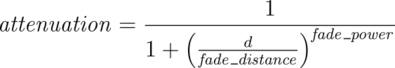
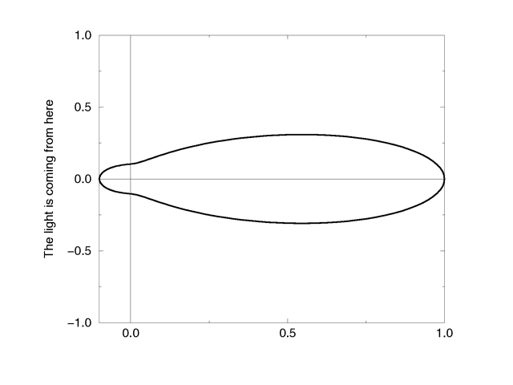
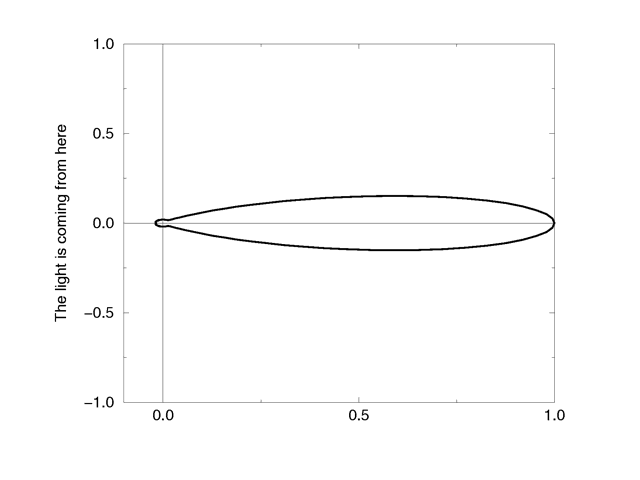
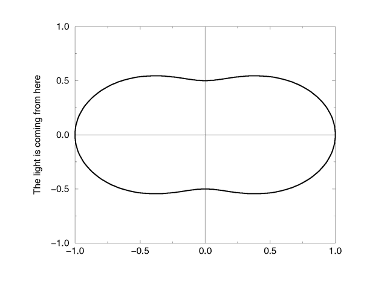
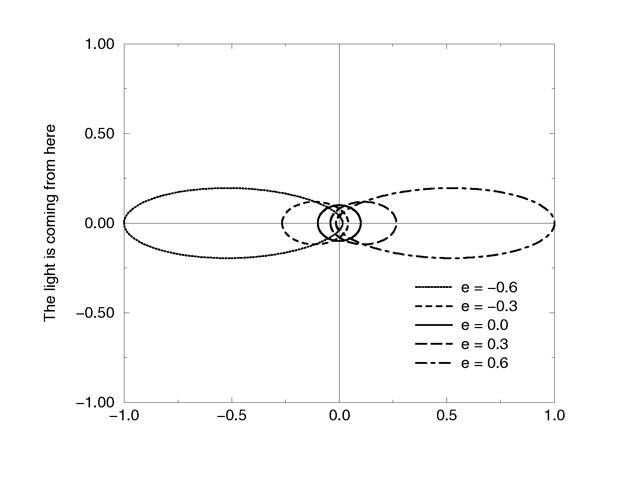

| POV-Ray for Unix version 3.8 | ||||
|
|
||||
| Home | POV-Ray for Unix | POV-Ray Tutorial | POV-Ray Reference | |
Atmospheric effects are a loosely-knit group of features that affect the background and/or the atmosphere enclosing the scene. POV-Ray includes the ability to render a number of atmospheric effects, such as fog, haze, mist, rainbows and skies.
Atmospheric effects such as fog, dust, haze, or visible gas may be simulated by a media statement specified in the scene but not attached to any object. All areas not inside a non-hollow object in the entire scene. A very simple approach to add fog to a scene is explained in the section Fog however this kind of fog does not interact with any light sources like media does. It will not show light beams or other effects and is therefore not very realistic.
The atmosphere media effect overcomes some of the fog's limitations by calculating the interaction between light and the particles in the atmosphere using volume sampling. Thus shafts of light beams will become visible and objects will cast shadows onto smoke or fog.
Note: POV-Ray cannot sample media along an infinitely long ray. The ray must be finite in order to be possible to sample. This means that sampling media is only possible for rays that hit an object, so no atmospheric media will show up against the background or sky_sphere. Another way of being able to sample media is using spotlights, because in this case the ray is not infinite, as it is sampled only inside the spotlight cone.
With spotlights you will be able to create the best results because their cone of light will become visible. Pointlights can be used to create effects like street lights in fog. Lights can be made to not interact with the atmosphere by adding media_interaction off to the light source. They can be used to increase the overall light level of the scene to make it look more realistic.
Complete details on media are given in the section Media. Earlier versions of POV-Ray used an atmosphere statement for atmospheric effects but that system was incompatible with the old object halo system. So atmosphere has been eliminated and replaced with a simpler and more powerful media feature. The user now only has to learn one media system for either atmospheric or object use.
If you only want media effects in a particular area, you should use object media rather than only relying upon the media pattern. In general it will be faster and more accurate because it only calculates inside the constraining object.
Note: The atmosphere feature will not work if the camera is inside a non-hollow object (see the section Empty and Solid Objects for a detailed explanation).
A background color can be specified if desired. Any ray that does not hit an object will be colored with this color. The default background is black. The syntax for background is:
BACKGROUND:
background {COLOR}
Note: As of version 3.7 some changes have been made to the way alpha is handled when +ua is activated.
background keyword would by default supply a background with transmit set to 1.0 (i.e. fully transparent provided that +ua is being used). This is no longer the case. While the default background is transparent, any background specified in a scene file (unless 3.6 or earlier compatibility is being used) will now be opaque unless transmit is explicitly given. In other words, use rgbft<> rather than rgb<> in the background statement if you want the old behavior.+ua is in effect (i.e. where the background could otherwise have been seen through the object). Now, however, the background color is taken into account, even if it is not otherwise visible. Blending is performed in the same way regardless of the presence of background transparency.Note: When using Output_Alpha=on or +ua with legacy scenes (the #version directive set to less than 3.7) the background will be suppressed, except in reflections.
If it is not necessary for light beams to interact with atmospheric media,
then fog may be a faster way to simulate haze or fog. This
feature artificially adds color to every pixel based on the distance the ray
has traveled. The syntax for fog is:
FOG:
fog { [FOG_IDENTIFIER] [FOG_ITEMS...] }
FOG_ITEMS:
fog_type Fog_Type | distance Distance | COLOR |
turbulence <Turbulence> | turb_depth Turb_Depth |
omega Omega | lambda Lambda | octaves Octaves |
fog_offset Fog_Offset | fog_alt Fog_Alt |
up <Fog_Up> | TRANSFORMATION
Fog default values:
lambda : 2.0 fog_type : 1 fog_offset : 0.0 fog_alt : 0.0 octaves : 6 omega : 0.5 turbulence : <0,0,0> turb_depth : 0.5 up : <0,1,0>
Currently there are two fog types, the default fog_type 1 is
a constant fog and fog_type 2 is ground fog. The constant fog
has a constant density everywhere while the ground fog has a constant density
for all heights below a given point on the up axis and thins out along this
axis.
The color of a pixel with an intersection depth d is calculated by
PIXEL_COLOR = exp(-d/D) * OBJECT_COLOR + (1-exp(-d/D)) * FOG_COLOR
where D is the specified value of the required fog distance
keyword. At depth 0 the final color is the object's color. If the
intersection depth equals the fog distance the final color consists of 64%
of the object's color and 36% of the fog's color.
Note: For this equation, a distance of zero is undefined. In practice, povray will treat this value as "fog is off". To use an extremely thick fog, use a small nonzero number such as 1e-6 or 1e-10.
For ground fog, the height below which the fog has constant density is
specified by the fog_offset keyword. The fog_alt
keyword is used to specify the rate by which the fog fades away. The default
values for both are 0.0 so be sure to specify them if ground fog is used. At
an altitude of Fog_Offset+Fog_Alt the fog has a
density of 25%. The density of the fog at height less than or equal to
Fog_Offset is 1.0 and for height larger than than Fog_Offset
is calculated by:
1/(1 + (y - Fog_Offset) / Fog_Alt) ^2
The total density along a ray is calculated by integrating from the height of the starting point to the height of the end point.
The optional up vector specifies a direction pointing up,
generally the same as the camera's up vector. All calculations done
during the ground fog evaluation are done relative to this up vector, i. e.
the actual heights are calculated along this vector. The up vector can also
be modified using any of the known transformations described in
Transformations. Though it may not be a good idea to scale the up
vector - the results are hardly predictable - it is quite useful to be able
to rotate it. You should also note that translations do not affect the up
direction (and thus do not affect the fog).
The required fog color has three purposes. First it defines the color to be used in blending the fog and the background. Second it is used to specify a translucency threshold. By using a transmittance larger than zero one can make sure that at least that amount of light will be seen through the fog. With a transmittance of 0.3 you will see at least 30% of the background. Third it can be used to make a filtering fog. With a filter value larger than zero the amount of background light given by the filter value will be multiplied with the fog color. A filter value of 0.7 will lead to a fog that filters 70% of the background light and leaves 30% unfiltered.
Fogs may be layered. That is, you can apply as many layers of fog as you like. Generally this is most effective if each layer is a ground fog of different color, altitude and with different turbulence values. To use multiple layers of fogs, just add all of them to the scene.
You may optionally stir up the fog by adding turbulence. The turbulence keyword may be followed by a float or vector to specify an amount of turbulence to be used. The omega, lambda and octaves turbulence parameters may also be specified. See the section Turbulence Warp for details on all of these turbulence parameters.
Additionally the fog turbulence may be scaled along the direction of the viewing ray using the turb_depth amount. Typical values are from 0.0 to 1.0 or more. The default value is 0.5 but any float value may be used.
Note: The fog feature will not work if the camera is inside a non-hollow object (see the section Empty and Solid Objects for a detailed explanation).
The sky sphere is used create a realistic sky background without the need of an additional sphere to simulate the sky. Its syntax is:
SKY_SPHERE:
sky_sphere { [SKY_SPHERE_IDENTIFIER] [SKY_SPHERE_ITEMS...] }
SKY_SPHERE_ITEM:
PIGMENT | TRANSFORMATION | [emission]
Note: When using Output_Alpha=on or +ua with legacy scenes (the #version directive set to less than 3.7) the sky_sphere will be suppressed, except in reflections.
The sky sphere can contain several pigment layers with the last pigment being at the top, i. e. it is evaluated last, and the first pigment being at the bottom, i. e. it is evaluated first. If the upper layers contain filtering and/or transmitting components lower layers will shine through. If not lower layers will be invisible.
Note: Version 3.7 changed the effect of filter in a layered-pigment sky_sphere to match the behavior of a corresponding layered-texture large regular sphere. The old behavior, though probably having been unintentional, is automatically re-activated for backward compatibility when a #version of less than 3.7 is specified.
The sky sphere is calculated by using the direction vector as the parameter for evaluating the pigment patterns. This leads to results independent from the view point, which fairly accurately models a real sky, where the distance to the sky is much larger than the distances between visible objects.
Optionally adding the emission keyword allows for brightness tuning of image-mapped sky sphere's. The default is rgb <1,1,1> with higher values increasing the brightness, and lower values correspondingly decrease it. Although primarily intended for easy tuning of light probe skies, the parameter also works with procedural sky pigments.
If you want to add a nice color blend to your background you can easily do this by using the following example.
sky_sphere {
pigment {
gradient y
color_map {
[ 0.5 color CornflowerBlue ]
[ 1.0 color MidnightBlue ]
}
scale 2
translate -1
}
emission rgb <0.8,0.8,1>
}
This gives a soft blend from CornflowerBlue at the horizon to MidnightBlue at the zenith. The scale and translate operations are used to map the direction vector values, which lie in the range from <-1, -1, -1> to <1, 1, 1>, onto the range from <0, 0, 0> to <1, 1, 1>. Thus a repetition of the color blend is avoided for parts of the sky below the horizon.
In order to easily animate a sky sphere you can transform it using the usual transformations described in Transformations. Though it may not be a good idea to translate or scale a sky sphere - the results are hardly predictable - it is quite useful to be able to rotate it. In an animation the color blendings of the sky can be made to follow the rising sun for example.
Note: Only one sky sphere can be used in any scene. It also will not work as you might expect if you use camera types like the orthographic or cylindrical camera. The orthographic camera uses parallel rays and thus you will only see a very small part of the sky sphere (you will get one color skies in most cases). Reflections in curved surface will work though, e. g. you will clearly see the sky in a mirrored ball.
Rainbows are implemented using fog-like, circular arcs. Their syntax is:
RAINBOW:
rainbow { [RAINBOW_IDENTIFIER] [RAINBOW_ITEMS...] }
RAINBOW_ITEM:
direction <Dir> | angle Angle | width Width |
distance Distance | COLOR_MAP | jitter Jitter | up <Up> |
arc_angle Arc_Angle | falloff_angle Falloff_Angle
Rainbow default values:
arc_angle : 180.0 falloff_angle : 180.0 jitter : 0.0 up : y
The required direction vector determines the direction of the
(virtual) light that is responsible for the rainbow. Ideally this is an
infinitely far away light source like the sun that emits parallel light rays.
The position and size of the rainbow are specified by the required angle
and width keywords. To understand how they work you should
first know how the rainbow is calculated.
For each ray the angle between the rainbow's direction vector and the
ray's direction vector is calculated. If this angle lies in the interval
from Angle-Width/2 to
Angle+Width/2 the rainbow is hit by the ray. The color is then
determined by using the angle as an index into the rainbow's color_map.
After the color has been determined it will be mixed with the background
color in the same way like it is done for fogs.
Thus the angle and width parameters determine the angles under which the
rainbow will be seen. The optional jitter keyword can be used
to add random noise to the index. This adds some irregularity to the rainbow
that makes it look more realistic.
The required distance keyword is the same like the one used
with fogs. Since the rainbow is a fog-like effect it is possible that the
rainbow is noticeable on objects. If this effect is not wanted it can be
avoided by using a large distance value. By default a sufficiently large
value is used to make sure that this effect does not occur.
The color_map statement is used to assign a color map that
will be mapped onto the rainbow. To be able to create realistic rainbows it
is important to know that the index into the color map increases with the
angle between the ray's and rainbow's direction vector. The index is
zero at the innermost ring and one at the outermost ring. The filter and
transmittance values of the colors in the color map have the same meaning as
the ones used with fogs (see the section Fog).
The default rainbow is a 360 degree arc that looks like a circle. This is no
problem as long as you have a ground plane that hides the lower, non-visible
part of the rainbow. If this is not the case or if you do not want the
full arc to be visible you can use the optional keywords up,
arc_angle and falloff_angle to specify a smaller
arc.
The arc_angle keyword determines the size of the arc in degrees
(from 0 to 360 degrees). A value smaller than 360 degrees results in an arc
that abruptly vanishes. Since this does not look nice you can use the
falloff_angle keyword to specify a region in which the rainbow
will smoothly blend into the background making it vanish softly. The falloff
angle has to be smaller or equal to the arc angle.
The up keyword determines were the zero angle position is. By
changing this vector you can rotate the rainbow about its direction. You
should note that the arc goes from -Arc_Angle/2 to
+Arc_Angle/2. The soft regions go from -Arc_Angle/2 to
-Falloff_Angle/2 and from +Falloff_Angle/2 to
+Arc_Angle/2.
The following example generates a 120 degrees rainbow arc that has a falloff region of 30 degrees at both ends:
rainbow {
direction <0, 0, 1>
angle 42.5
width 5
distance 1000
jitter 0.01
color_map { Rainbow_Color_Map }
up <0, 1, 0>
arc_angle 120
falloff_angle 30
}
It is possible to use any number of rainbows and to combine them with other atmospheric effects.
The media statement is used to specify particulate matter suspended in a medium such air or water. It can be used to specify smoke, haze, fog, gas, fire, dust etc. Previous versions of POV-Ray had two incompatible systems for generating such effects. One was halo for effects enclosed in a transparent or semi-transparent object. The other was atmosphere for effects that permeate the entire scene. This duplication of systems was complex and unnecessary. Both halo
and atmosphere have been eliminated. See Why are Interior and Media Necessary? for further details on this change. See Object Media
for details on how to use media with objects. See Atmospheric Media for details on using media for atmospheric effects outside of objects. This section and the sub-sections which follow explains the details of the various media options which are useful for either object media or atmospheric media.
Media works by sampling the density of particles at some specified number of points along the ray's path. Sub-samples are also taken until the results reach a specified confidence level. POV-Ray provides three methods of sampling. When used in an object's interior statement, sampling only occurs inside the object. When used for atmospheric media, the samples run from
the camera location until the ray strikes an object. Therefore for localized effects, it is best to use an enclosing object even though the density pattern might only produce results in a small area whether the media was enclosed or not.
The complete syntax for a media statement is as follows:
MEDIA:
media { [MEDIA_IDENTIFIER] [MEDIA_ITEMS...] }
MEDIA_ITEMS:
method Number | intervals Number | samples Min, Max |
confidence Value | variance Value | ratio Value | jitter Value
absorption COLOR | emission COLOR | aa_threshold Value |
aa_level Value |
scattering {
Type, COLOR [ eccentricity Value ] [ extinction Value ]
} |
density {
[DENSITY_IDENTIFIER] [PATTERN_TYPE] [DENSITY_MODIFIER...]
} |
TRANSFORMATIONS
DENSITY_MODIFIER:
PATTERN_MODIFIER | DENSITY_LIST | COLOR_LIST |
color_map { COLOR_MAP_BODY } | colour_map { COLOR_MAP_BODY } |
density_map { DENSITY_MAP_BODY }
Media default values:
aa_level : 3 aa_threshold : 0.1 absorption : <0,0,0> confidence : 0.9 emission : <0,0,0> intervals : 1 jitter : 0.0 method : 3 ratio : 0.9 samples : Min 1, Max 1 variance : 1/128 SCATTERING COLOR : <0,0,0> eccentricity : 0.0 extinction : 1.0
If a media identifier is specified, it must be the first item. All other media items may be specified in any order. All are optional. You may have multiple density statements in a single media statement. See Multiple Density vs. Multiple Media for details. Transformations apply only to the density statements which have been already specified. Any density after a transformation is not affected. If the media has no density statements and none was specified in any media identifier, then the transformation has no effect. All other media items except for density and transformations override default values or any previously set values for this media statement.
Note: Some media effects depend upon light sources. However the participation of a light source depends upon the media_interaction and media_attenuation keywords. See Atmospheric Media Interaction and Atmospheric Attenuation for details.
Note: If you specify transmit or filter to create a transparent container object, absorption media will always cast a shadow. The same applies to scattering media unless extinction is set to zero, so if a shadow is not desired, use the no_shadow keyword for the container object. This does not apply to emission media as it never casts a shadow.
Introduced in POV-Ray 3.1 is an object modifier statement called
interior. The syntax is:
INTERIOR:
interior { [INTERIOR_IDENTIFIER] [INTERIOR_ITEMS...] }
INTERIOR_ITEM:
ior Value | caustics Value | dispersion Value |
dispersion_samples Samples | fade_distance Distance |
fade_power Power | fade_color <Color>
MEDIA...
Interior default values:
ior : 1.0 caustics : 0.0 dispersion : 1.0 dispersion_samples : 7 fade_distance : 0.0 fade_power : 0.0 fade_color : <0,0,0>
The interior contains items which describe the properties of the interior of the object. This is in contrast to the texture and interior_texture which describe the surface properties only. The interior of an object is only of interest if it has a transparent texture which allows you to see inside the object. It also applies only to solid objects which have a well-defined inside/outside distinction.
Note: The open keyword, or clipped_by modifier also allows you to see inside but interior features may not render properly. They should be avoided if accurate interiors are required.
Interior identifiers may be declared to make scene files more readable and to parameterize scenes so that changing a single declaration changes many values. An identifier is declared as follows.
INTERIOR_DECLARATION: #declare IDENTIFIER = INTERIOR | #local IDENTIFIER = INTERIOR
Where IDENTIFIER is the name of the identifier up to 40 characters long and INTERIOR is any valid interior statement. See #declare vs. #local for information on identifier scope.
In previous versions of POV-Ray, most of the items in the interior statement were previously part of the finish statement. Also the halo statement which was once part of the texture statement has been discontinued and has been replaced by the media statement which is part of interior.
You are probably asking WHY? As explained earlier, the interior contains items which describe the properties of the interior of the object. This is in contrast to the texture which describes the surface properties only. However this is not just a philosophical change. There were serious inconsistencies in the old model.
The main problem arises when a texture_map or other patterned texture is used. These features allow you to create
textures that are a blend of two textures and which vary the entire texture from one point to another. It does its blending by fully evaluating the apparent color as though only one texture was applied and then fully reevaluating it with the other texture. The two final results are blended.
It is totally illogical to have a ray enter an object with one index or refraction and then recalculate with another index. The result is not an average of the two ior values. Similarly it makes no sense to have a ray enter at one ior and exit at a different ior without transitioning between them along the way. POV-Ray only calculates refraction as the ray enters or leaves. It cannot incrementally compute a changing ior through the interior of an object. Real world objects such as optical fibers or no-line bifocal eyeglasses can have variable iors but POV-Ray cannot simulate them.
Similarly the halo calculations were not performed as the
syntax implied. Using a halo in such multi-textured objects did
not vary the halo through the interior of the object. Rather,
it computed two separate halos through the whole object and averaged the
results. The new design for media which replaces
halo makes it possible to have media that varies throughout the
interior of the object according to a pattern but it does so independently of
the surface texture. Because there are other changes in the design of this
feature which make it significantly different, it was not only moved to the
interior but the name was changed.
During our development, someone asked if we will create patterned interiors
or a hypothetical interior_map feature. We will not. That would
defeat the whole purpose of moving these features in the first place. They
cannot be patterned and have logical or self-consistent results.
It is very important that you know the basic concept behind empty and solid objects in POV-Ray to fully understand how features like interior and translucency are used. Objects in POV-Ray can either be solid, empty or filled with (small) particles.
A solid object is made from the material specified by its pigment and finish statements (and to some degree its normal statement). By default all objects are assumed to be solid. If you assign a stone texture to a sphere you will get a ball made completely of stone. It is like you had cut this ball from a block of stone. A glass ball is a massive sphere made of glass. You should be aware that solid objects are conceptual things. If you clip away parts of the sphere you will clearly see that the interior is empty and it just has a very thin surface.
This is not contrary to the concept of a solid object used in POV-Ray. It is
assumed that all space inside the sphere is covered by the sphere's
interior. Light passing through the object is affected by
attenuation and refraction properties. However there is no room for any other
particles like those used by fog or interior media.
Empty objects are created by adding the hollow keyword (see
Hollow) to the object statement. An empty (or hollow) object is
assumed to be made of a very thin surface which is of the material specified
by the pigment, finish and normal statements. The object's interior is
empty, it normally contains air molecules.
An empty object can be filled with particles by adding fog or atmospheric media to the scene or by adding an interior media to the object. It is very important to understand that in order to fill an object with any kind of particles it first has to be made hollow.
There is a pitfall in the empty/solid object implementation that you have to be aware of.
In order to be able to put solid objects inside a media or fog, a test has to be made for every ray that passes through the media. If this ray travels through a solid object the media will not be calculated. This is what anyone will expect. A solid glass sphere in a fog bank does not contain fog.
The problem arises when the camera ray is inside any non-hollow object. In this case the ray is already traveling through a solid object and even if the media's container object is hit and it is hollow, the media will not be calculated. There is no way of telling between these two cases.
POV-Ray has to determine whether the camera is inside any object prior to tracing a camera ray in order to be able to correctly render medias when the camera is inside the container object. There is no way around doing this.
The solution to this problem (that will often happen with infinite objects like planes) is to make those objects hollow too. Thus the ray will travel through a hollow object, will hit the container object and the media will be calculated.
All the statements that can be put in an interior represent aspects of the matter that an object is made of. Scaling an object, changing its size, does not change its matter. Two pieces of the same quality steel, one twice as big as the other, both have the same density. The bigger piece is quite a bit heavier though.
So, in POV-Ray, if you design a lens from a glass with an ior of 1.5
and you scale it bigger, the focal distance of the lens will get longer
as the ior stays the same. For light attenuation it means that an object will be
darker after being scaled up. The light intensity decreases a certain
amount per pov-unit. The object has become bigger, more pov-units, so more light is faded.
The fade_distance, fade_power themselves have not been changed.
The same applies to media. Imagine media as a density of particles,
you specify 100 particles per cubic pov-unit. If we scale a 1 cubic
pov-unit object to be twice as big in every direction, we will have a
total of 800 particles in the object. The object will look different,
as we have more particles to look through. Yet the objects density is
still 100 particles per cubic pov-unit. In media this particle
density is set by the color after emission, absorption, or in
the scattering statement
#version 3.5;
global_settings {
assumed_gamma 1.0
}
camera {location <0, 0,-12.0> look_at 0 angle 30 }
#declare Container_T =
texture {
pigment {rgbt <1,1,1,1>}
finish {ambient 0 diffuse 0}
}
#declare Scale=2;
box { //The reference
<-1,-1,0>,<1,1,.3>
hollow
texture {Container_T}
interior {
media {
intervals 1
samples 1,1
emission 1
}
}
translate <-2.1,0,0>
}
box { //Object scaled twice as big
<-1,-1,0>,<1,1,.3> //looks different but same
hollow //particle density
texture {Container_T}
interior {
media {
intervals 1
samples 1,1
emission 1
}
}
scale Scale
translate<0,0,12>
}
box { //Object scaled twice as big
<-1,-1,0>,<1,1,.3> //looks the same but particle
hollow //density scaled down
texture {Container_T}
interior {
media {
intervals 1
samples 1,1
emission 1/Scale
}
}
scale Scale
translate<0,0,12>
translate<4.2,0,0>
}
The third object in the scene above, shows what to do, if you want to scale the object and want it to keep the same look as before. The interior feature has to be divided by the same amount, that the object was scaled by. This is only possible when the object is scaled uniform.
In general, the correct approach is to scale the media density proportionally to the change in container volume. For non-uniform scaling to get an unambiguous result, that can be explained in physical terms, we need to do:
Density*sqrt(3)/vlength(Scale)
where Density is your original media density and Scale is the scaling vector applied to the container.
Note: The density modifiers inside the density{}
statement are scaled along with the object.
When light passes through a surface either into or out of a dense medium
the path of the ray of light is bent. Such bending is called
refraction. The amount of bending or refracting of light depends upon
the density of the material. Air, water, crystal and diamonds all have
different densities and thus refract differently. The index of
refraction or ior value is used by scientists to describe the
relative density of substances. The ior keyword is used in
POV-Ray in the interior to turn on refraction and to specify the
ior value. For example:
object { MyObject pigment {Clear } interior { ior 1.5 } }
The default ior value of 1.0 will give no refraction. The index of refraction for air is 1.0, water is 1.33, glass is 1.5 and diamond is 2.4.
Normally transparent or semi-transparent surfaces in POV-Ray do not refract
light. Earlier versions of POV-Ray required you to use the
refraction keyword in the finish statement to turn on
refraction. This is no longer necessary. Any non-zero ior value
now turns refraction on.
In addition to turning refraction on or off, the old refraction
keyword was followed by a float value from 0.0 to 1.0. Values in between 0.0
and 1.0 would darken the refracted light in ways that do not correspond to
any physical property. Many POV-Ray scenes were created with intermediate
refraction values before this bug was discovered so the feature has been
maintained. A more appropriate way to reduce the brightness of refracted
light is to change the filter or
transmit value in the colors
specified in the pigment statement or to use the fade_power
and fade_distance keywords.
See Attenuation.
Note: Neither the ior nor refraction keywords cause the
object to be transparent. Transparency only occurs if there is a non-zero
filter or transmit value in the color.
The refraction and ior keywords were originally
specified in finish but are now properly specified in
interior. They are accepted in finish
for backward compatibility and generate a warning message.
For all materials with a ior different from 1.0 the refractive index is not constant throughout the spectrum. It changes as a function of wavelength. Generally the refractive index decreases as the wavelength increases. Therefore light passing through a material will be separated according to wavelength. This is known as chromatic dispersion.
By default POV-Ray does not calculate dispersion as light travels through a
transparent object. In order to get a more realistic effect the dispersion
and dispersion_samples keywords can be added to the
interior{} block. They will simulate dispersion by creating a
prismatic color effect in the object.
The dispersion value is the ratio of refractive indices for violet to
red. It controls the strength of dispersion (how much the colors are spread out) used.
A DISPERSION_VALUE of 1 will give no dispersion, good values are 1.01 to 1.1.
Note: There will be no dispersion, unless the ior keyword has
been specified in interior{ }. An ior of 1 is legal. The ior has no
influence on the dispersion strength, only on the angle of refraction.
As POV-Ray does not use wavelengths for raytracing, a spectrum is simulated.
The dispersion_samples value controls the amount of color-steps and
smoothness in the spectrum. The default value is 7, the minimum is 2. Values up to
100 or higher may be needed to get a very smooth result.
Dispersion only affects the interior of an object and has no effect on faked
caustics (See Faked Caustics).
To see the effects of dispersion in caustics, photon mapping is needed. See the sections
Photons and Photons and Dispersion.
Light attenuation is used to model the decrease in light intensity as
the light travels through a transparent object. The keywords fade_power, fade_distance and fade_color are specified in the interior statement.
The fade_distance value determines the distance the light has to travel to reach half intensity while the fade_power value determines how fast the light will fall off. fade_color colorizes the attenuation. For realistic effects a fade power of 1 to 2 should be used. Default values for fade_power and fade_distance is 0.0 which turns this feature off. Default for fade_color is <0,0,0>, if fade_color is <1,1,1> there is no attenuation. The actual colors give colored attenuation. <1,0,0> looks red, not cyan as in media.
The attenuation is calculated by a formula similar to that used for light source attenuation.
|  |
|
Media Attenuation |
If you set fade_power in the interior of an object at 1000 or above, a realistic exponential attenuation function will be used:
Attenuation = exp(-depth/fade_dist)
The fade_power and fade_distance keywords were
originally specified in finish but are now properly specified in
interior. They are accepted in finish for backward
compatibility and generate a warning message.
Caustics are light effects that occur if light is reflected or refracted by specular reflective or refractive surfaces. Imagine a glass of water standing on a table. If sunlight falls onto the glass you will see spots of light on the table. Some of the spots are caused by light being reflected by the glass while some of them are caused by light being refracted by the water in the glass.
Since it is a very difficult and time-consuming process to actually calculate those effects (though it is not impossible), see the sections Photons. POV-Ray uses a quite simple method to simulate caustics caused by refraction. The method calculates the angle between the incoming light ray and the surface normal. Where they are nearly parallel it makes the shadow brighter. Where the angle is greater, the effect is diminished. Unlike real-world caustics, the effect does not vary based on distance. This caustic effect is limited to areas that are shaded by the transparent object. You will get no caustic effects from reflective surfaces nor in parts that are not shaded by the object.
The caustics Power keyword controls the
effect. Values typically range from 0.0 to 1.0 or higher. Zero is the default
which is no caustics. Low, non-zero values give broad hot-spots while higher
values give tighter, smaller simulated focal points.
The caustics keyword was originally specified in
finish but is now properly specified in interior. It is
accepted in finish for backward compatibility and generates a
warning message.
The interior statement may contain one or more media
statements. Media is used to simulate suspended particles such as smoke,
haze, or dust. Or visible gasses such as steam or fire and explosions. When
used with an object interior, the effect is constrained by the object's
shape. The calculations begin when the ray enters an object and ends when
it leaves the object. This section only discusses media when used with
object interior. The complete syntax and an explanation of all of the
parameters and options for media is given in the section
Media.
Typically the object itself is given a fully transparent texture however media also works in partially transparent objects. The texture pattern itself does not effect the interior media except perhaps to create shadows on it. The texture pattern of an object applies only to the surface shell. Any interior media patterns are totally independent of the texture.
In previous versions of POV-Ray, this feature was called halo
and was part of the texture specification along with
pigment, normal, and finish. See the section: Why are Interior and Media Necessary? for an explanation of the reasons for the change.
Media may also be specified outside an object to simulate atmospheric media. There is no constraining object in this case. If you only want media effects in a particular area, you should use object media rather than only relying upon the media pattern. In general it will be faster and more accurate because it only calculates inside the constraining object. See Atmospheric Media for details on unconstrained uses of media.
You may specify more than one media statement per
interior statement. In that case, all of the media participate and
where they overlap, they add together.
Any object which is supposed to have media effects inside it, whether those
effects are object media or atmospheric media, must have the hollow on
keyword applied. Otherwise the media is blocked. See the section: Empty and Solid Objects
for details.
There are three types of particle interaction in media: absorbing, emitting, and scattering. All three activities may occur in a single media. Each of these three specifications requires a color. Only the red, green, and blue components of the color are used. The filter and transmit values are ignored. For this reason it is permissible to use one float value to specify an intensity of white color. For example, the following two lines are legal and produce the same results:
emission 0.75 emission rgb <0.75,0.75,0.75>
The absorption keyword specifies a color of light which is absorbed when looking through the media. For example, absorption rgb<0,1,0> blocks the green light but permits red and blue to get through. Therefore a white object behind the media will appear magenta. The default value is rgb<0,0,0> which means no light is absorbed, meaning all light passes through normally.
The emission keyword specifies the color of the light emitted from the particles. Particles which emit light are visible without requiring additional illumination. However, they will only illuminate other objects if radiosity is used with media on. This is similar to an object with high ambient values. The default value is rgb<0,0,0> which means no light is emitted.
The syntax of a scattering statement is:
SCATTERING:
scattering {
Type, COLOR [ eccentricity Value ] [ extinction Value ]
}
The first float value specifies the type of scattering. This is followed by the color of the scattered light. The default value if no scattering statement is given is rgb <0,0,0> which means no scattering occurs.
The scattering effect is only visible when light is shining on the media from a light source. This is similar to diffuse reflection off of an object. In addition to reflecting light, scattering media also absorbs light like an absorption media. The balance between how much absorption occurs for a given amount of scattering is controlled by the optional extinction keyword and a single float value. The default value of 1.0 gives an extinction effect that matches the scattering. Values such as extinction 0.25 give 25% the normal amount. Using extinction 0.0 turns it off completely. Any value other than the 1.0 default is contrary to the real physical model but decreasing extinction can give you more artistic flexibility.
The integer value Type specifies one of five different scattering phase functions representing the different models: isotropic, Mie (haze and murky atmosphere), Rayleigh, and Henyey-Greenstein.
Type 1, isotropic scattering is the simplest form of scattering because it is independent of direction. The amount of light scattered by particles in the atmosphere does not depend on the angle between the viewing direction and the incoming light.
Types 2 and 3 are Mie haze and Mie murky scattering which are used for relatively small particles such as minuscule water droplets of fog, cloud particles, and particles responsible for the polluted sky. In this model the scattering is extremely directional in the forward direction, i.e. the amount of scattered light is largest when the incident light is anti-parallel to the viewing direction (the light goes directly to the viewer). It is smallest when the incident light is parallel to the viewing direction. The haze and murky atmosphere models differ in their scattering characteristics. The murky model is much more directional than the haze model.
|  |
|
The Mie haze scattering function |
|  |
|
The Mie murky scattering function |
Type 4 Rayleigh scattering models the scattering for extremely small particles such as molecules of the air. The amount of scattered light depends on the incident light angle. It is largest when the incident light is parallel or anti-parallel to the viewing direction and smallest when the incident light is perpendicular to the viewing direction. You should note that the Rayleigh model used in POV-Ray does not take the dependency of scattering on the wavelength into account.
|  |
|
The Rayleigh scattering function |
Type 5 is the Henyey-Greenstein scattering model. It is based on an analytical function and can be used to model a large variety of different scattering types. The function models an ellipse with a given eccentricity e. This eccentricity is specified by the optional keyword eccentricity which is only used for scattering type five. The default eccentricity value of zero defines isotropic scattering while positive values lead to scattering in the direction of the light and negative values lead to scattering in the opposite direction of the light. Larger values of e (or smaller values in the negative case) increase the directional property of the scattering.
|  |
|
The Henyey-Greenstein scattering function for different eccentricity values |
Note: See the section on Light Groups for additional information when using scattering media in a light group.
Media effects are calculated by sampling the media along the path of the ray. It uses a process called Monte Carlo integration. POV-Ray provides three different types of media sampling. The method keyword lets you specify what sampling type is used.
Note: As of version 3.5 the default sampling method is 3, and it's default for intervals is 1. Sampling methods 1 and 2 have been retained for legacy purposes.
Sample method 3 uses adaptive sampling (similar to adaptive anti-aliasing) which is very much like the sampling method used in POV-Ray 3.0 atmosphere. This code was written from the ground-up to work with media. However, adaptive sampling works by taking another sample between two existing samples if there is too much variance in the original two samples. This leads to fewer samples being taken in areas where the effect from the media remains constant. The adaptive sampling is only performed if the minimum samples are set to 3 or more.
You can specify the anti-aliasing recursion depth using the aa_level keyword followed by an integer. You can specify the anti-aliasing threshold by using the aa_threshold followed by a float. The default for aa_level is 4 and the default aa_threshold is 0.1. jitter also works with method 3.
Note: It is usually best to only use one interval with method 3. Too many intervals can lead to artifacts, and POV will create more intervals if it needs them.
Sample method 1 used the intervals keyword to specify the integer number of intervals used to sample the ray. For object media, the intervals are spread between the entry and exit points as the ray passes through the container object. For atmospheric media, the intervals spans the entire length of the ray from its start until it hits an object. For media types which interact with spotlights or cylinder lights, the intervals which are not illuminated by these light types are weighted differently than the illuminated intervals when distributing samples.
The ratio keyword distributes intervals differently between lit and unlit areas. The default value of ratio 0.9 means that lit intervals get more samples than unlit intervals. Note that the total number of intervals must exceed the number of illuminated intervals. If a ray passes in and out of 8 spotlights but you have only specified 5 intervals then an error occurs.
The samples Min, Max keyword specifies the minimum and maximum number of samples taken per interval. The default values are samples 1,1. The value for Max may be omitted, in which case the range Min = Max will be used.
As each interval is sampled, the variance is computed. If the variance is below a threshold value, then no more samples are needed. The variance and confidence keywords specify the permitted variance allowed and the confidence that you are within that variance. The exact calculations are quite complex and involve chi-squared tests and other statistical principles too messy to describe here. The default values are variance 1.0/128 and confidence
0.9. For slower more accurate results, decrease the variance and increase the confidence.
Note: The maximum number of samples limits the calculations even if the proper variance and confidence are never reached.
Sample method 2 distributed samples evenly along the viewing ray or light ray. The latter can make things look smoother sometimes. If you specify a maximum number of samples higher than the minimum number of samples, POV will take additional samples, but they will be random, just like in method 1. Therefore, it is suggested you set the max samples equal to the minimum samples.
jitter will cause method 2 to look similar to method 1. It should be followed by a float, and a value of 1 will stagger the samples in the full range between samples.
Particles of media are normally distributed in constant density throughout the media. However, the density statement allows you to vary the density across space using any of POV-Ray's pattern functions such as those used in textures. If no density statement is given then the density remains a constant value of 1.0 throughout the media. More than one density may be specified per media statement. See Multiple Density vs. Multiple Media.
The syntax for density is:
DENSITY:
density {
[DENSITY_IDENTIFIER]
[DENSITY_TYPE]
[DENSITY_MODIFIER...]
}
DENSITY_TYPE:
PATTERN_TYPE | COLOR
DENSITY_MODIFIER:
PATTERN_MODIFIER | DENSITY_LIST | color_map { COLOR_MAP_BODY } |
colour_map { COLOR_MAP_BODY } | density_map { DENSITY_MAP_BODY }
The density statement may begin with an optional density identifier. All subsequent values modify the defaults or the values in the identifier. The next item is a pattern type. This is any one of POV-Ray's pattern functions such as bozo, wood, gradient, waves, etc. Of particular usefulness are the spherical, planar, cylindrical, and boxed patterns which were previously available only for use with our discontinued halo feature. All patterns return a value from 0.0 to 1.0. This value is interpreted as the density of the media at that particular point. See the section Pattern for details on particular pattern types. Although a solid COLOR pattern is legal, in general it is used only when the density statement is inside a density_map.
A density statement may be modified by any of the general pattern modifiers such as transformations, turbulence and warp. See Pattern Modifiers for details. In addition, there are several density-specific modifiers which can be used.
Typically, a media uses just one constant color throughout. Even if you vary the density, it is usually just one color which is specified by the absorption, emission, or scattering keywords. However, when using emission to simulate fire or explosions, the center of the flame (high density area) is typically brighter and white or yellow. The outer edge of the flame (less density) fades to orange, red, or in some cases deep blue. To model the density-dependent change in color which is visible, you may specify a color_map. The pattern function returns a value from 0.0 to 1.0 and the value is passed to the color map to compute what color or blend of colors is used. See Color Maps for details on how pattern values work with color_map. This resulting color is multiplied by the absorption, emission and scattering color. Currently there is no way to specify different color maps for each media type within the same media statement.
Consider this example:
media {
emission 0.75
scattering {1, 0.5}
density {
spherical
color_map {
[0.0 rgb <0,0,0.5>]
[0.5 rgb <0.8, 0.8, 0.4>]
[1.0 rgb <1,1,1>]
}
}
}
The color map ranges from white at density 1.0 to bright yellow at density 0.5 to deep blue at density 0. Assume we sample a point at density 0.5. The emission is 0.75*<0.8,0.8,0.4> or <0.6,0.6,0.3>. Similarly the scattering color is 0.5*<0.8,0.8,0.4> or <0.4,0.4,0.2>.
For block pattern types checker, hexagon, and brick you may specify a color list such as this:
density {
checker
density {rgb<1,0,0>}
density {rgb<0,0,0>}
}
See Color List Pigments which describes how pigment uses a color list. The same principles apply when using them with density.
In addition to specifying blended colors with a color map you may create a blend of densities using a density_map. The syntax for a density map is identical to a color map except you specify a density in each map entry (and not a color).
The syntax for density_map is as follows:
DENSITY_MAP:
density_map { DENSITY_MAP_BODY }
DENSITY_MAP_BODY:
DENSITY_MAP_IDENTIFIER | DENSITY_MAP_ENTRY...
DENSITY_MAP_ENTRY:
[ Value DENSITY_BODY ]
Where Value is a float value between 0.0 and 1.0 inclusive and each DENSITY_BODY is anything which can be inside a density{...} statement. The density keyword and {} braces need not be specified.
Note: The [] brackets are part of the actual DENSITY_MAP_ENTRY. They are not notational symbols denoting optional parts. The brackets surround each entry in the density map.
In previous versions there had to be from 2 to 256 entries in the map. A Change in version 3.8 has removed the upper restriction.
Density maps may be nested to any level of complexity you desire. The densities in a map may have color maps or density maps or any type of density you want.
Density lists may also be used with block patterns such as checker, hexagon and brick, as well as the object pattern object.
For example:
density {
checker
density { Flame scale .8 }
density { Fire scale .5 }
}
Note: In the case of block patterns the density wrapping is required around the density information.
A density map is also used with the average density type. See Average for details.
You may declare and use density map identifiers but the only way to declare a density block pattern list is to declare a density identifier for the entire density.
It is possible to have more than one media specified per object and it is legal to have more than one density per media. The effects are quite different.
Consider this example:
object {
MyObject
pigment { rgbf 1 }
interior {
media {
density { Some_Density }
density { Another_Density }
}
}
}
As the media is sampled, calculations are performed for each density pattern at each sample point. The resulting samples are multiplied together. Suppose one density returned rgb<.8,.8,.4> and the other returned rgb<.25,.25,0>. The resulting color is rgb<.2,.2,0>.
Note: In areas where one density returns zero, it will wipe out the other density. The end result is that only density areas which overlap will be visible. This is similar to a CSG intersection operation. Now consider:
object {
MyObject
pigment { rgbf 1 }
interior {
media {
density { Some_Density }
}
media {
density { Another_Density }
}
}
}
In this case each media is computed independently. The resulting colors are added together. Suppose one density and media returned rgb<.8,.8,.4> and the other returned rgb<.25,.25,0>. The resulting color is rgb<1.05,1.05,.4>. The end result is that density areas which overlap will be especially bright and all areas will be visible. This is similar to a CSG union operation. See the sample scene ~scenes\interior\media\media4.pov for an example which illustrates this.